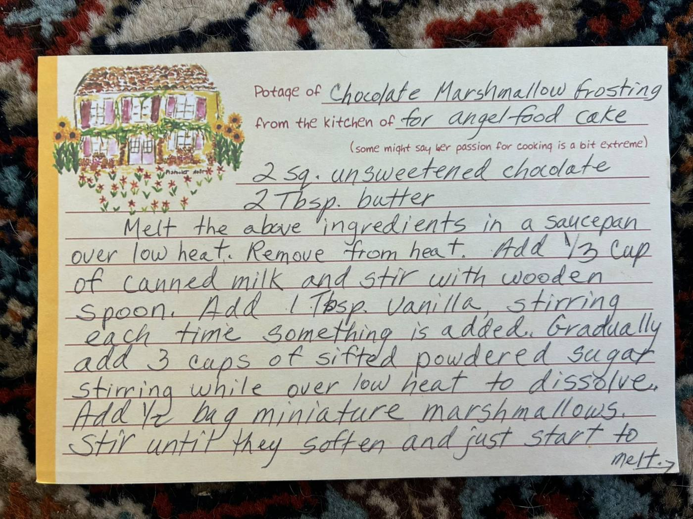
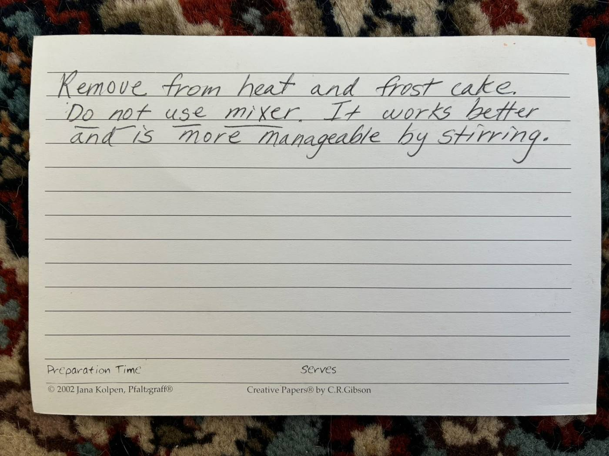

Desserts
Chocolate Marshmallow Frosting
From the kitchen of Mom
CookStovetop, low heat
ForAngel food cake


Mom's original card (front and back) · tap to enlarge
Ingredients
Method tap a step to mark it done
- Melt the chocolate and butter in a saucepan over low heat.
- Remove from the heat. Add the evaporated milk and stir with a wooden spoon.
- Add the vanilla. Stir each time something is added.
- Gradually add the powdered sugar, stirring over low heat until it dissolves.
- Add the marshmallows and stir until they soften and just start to melt.
- Remove from the heat and frost the cake.
Mom’s tips
- Do not use a mixer. It works better and is more manageable by stirring.
- The card says 1 Tbsp of vanilla, but 1 tsp is plenty.